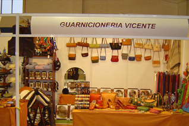

Sobre Nosotros
Guarnicionería Vicente, es una empresa fundada en 1999, dedicada a la creación artesanal de todo tipo de sillas y accesorios de equitación, tanto para el caballo como para el jinete. Nuestra tienda está situada en Cantillana, provincia de Sevilla, a los pies de la sierra norte sevillana. Nuestro taller les ofrece la mayor garantía, tanto en calidad como en acabado de todos nuestros artículos, que caracterizan el mejor trabajo artesano, que es tarjeta de presentación perfecto para todos nuestros clientes.
¿Qué Hacemos?

En nuestros trabajos, tanto los materiales utilizados, como el proceso de elaboración de los mismos se realiza con los métodos tradicionlales en guarnicioneria, todo ello lo podras comprobar en nuestra seccion de Trabajos.


Outles
Ofertas
No dudes en visitar nuestra sección de ofertas, tenemos un amplio stock en productos "Outles".
Productos

Productos artesanales
Tenemos una gran variedad de productos artesanales hechos a medias y por encargos. En nuestra seccion de Productos tenemos una parte del amplio stock de nuestra tienda.
Noticias
Feria de muestras en Cantillana
Guarnicioneria Vicente, tuvo su stand en la feria de muestra realizada en Cantillana. En este stand tenemos numerosos articulos a un precio de risa